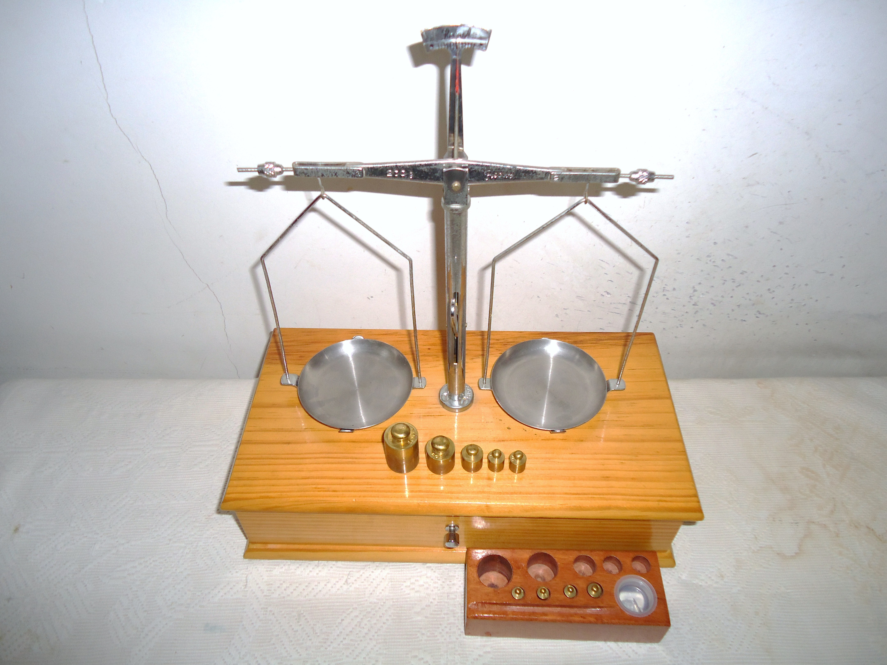

O que são média, mediana e desvio padrão?
Nas aulas anteriores vimos o vocabulário básico da Estatística e como ela funciona como um processo. Agora vamos ao coração da Estatística Descritiva: como resumir um conjunto de dados em poucos números que contam a história do "centro" e da "dispersão" dos dados. Média, mediana e desvio padrão são as estatísticas mais usadas, e vamos aprender a calcular e, principalmente, a interpretar cada uma delas.
Objetivos de Aprendizagem
Ao término desta aula, vocês serão capazes de:
- Calcular a média e a mediana de um conjunto de dados numéricos;
- Reconhecer quando a mediana representa melhor o "centro" dos dados do que a média;
- Calcular o desvio padrão de uma amostra, passo a passo;
- Interpretar o que um desvio padrão pequeno ou grande revela sobre a dispersão dos dados;
- Aplicar média, mediana e desvio padrão para descrever e comparar dados do dia a dia e da tecnologia.
Seções de Estudo
- SEÇÃO 1 Medindo o centro: média e mediana
- SEÇÃO 2 Quando a média engana: o efeito dos outliers
- SEÇÃO 3 Medindo a dispersão: o desvio padrão
Medindo o centro: média e mediana

Média é a soma de todos os valores de um conjunto de dados dividida pela quantidade de valores. É a medida de centro mais usada, mas não é a única. A mediana é o valor que fica exatamente no meio quando os dados estão ordenados do menor para o maior. Se a quantidade de valores for par, a mediana é a média dos dois valores do meio.
| Estatística | Como calcular |
|---|---|
| Média | soma de todos os valoresquantidade de valores |
| Mediana | Ordenar os valores; pegar o do meio (ou a média dos dois do meio) |
Quando a média engana: o efeito dos outliers
Outlier é um valor muito maior ou muito menor do que a maioria dos dados do conjunto. A média é sensível a outliers, porque leva em conta o valor exato de cada número: um único valor extremo já é suficiente para puxá-la para cima ou para baixo. A mediana, por olhar apenas para a posição central dos dados ordenados, não sofre esse efeito. Por isso dizemos que a mediana é resistente a outliers.
| Salários da padaria | Média | Mediana |
|---|---|---|
| Com o salário do dono | R$ 3.960 | R$ 2.000 |
| Sem o salário do dono | R$ 1.950 | R$ 1.950 |
Medindo a dispersão: o desvio padrão
Média e mediana descrevem o centro, mas nada dizem sobre o quanto os dados variam entre si. O desvio padrão mede essa dispersão: quanto menor o desvio padrão, mais os dados estão concentrados perto da média; quanto maior, mais espalhados eles estão.
Para calcular o desvio padrão de uma amostra, siga estes passos: (1) calcule a média; (2) subtraia a média de cada valor; (3) eleve cada resultado ao quadrado; (4) some todos os quadrados; (5) divida a soma por (n − 1); (6) tire a raiz quadrada do resultado.
| Aplicativo | Nota média | Desvio padrão | Interpretação |
|---|---|---|---|
| App A | 4,0 | 0,3 | Avaliações parecidas: usuários concordam |
| App B | 4,0 | 1,5 | Avaliações bem diferentes: opiniões divididas |
Exemplo Matemático Resolvido
Um aplicativo de edição de fotos registrou o número de travamentos por dia ao longo de 5 dias: 2, 3, 3, 5 e 7. Qual é o desvio padrão desses travamentos?
- Dados: valores = 2, 3, 3, 5, 7; n = 5
- Fórmula: s = √ Σ(x − x̄)²n − 1
- Substituição: média = 2+3+3+5+75 = 4; diferenças: −2, −1, −1, 1, 3; quadrados: 4, 1, 1, 1, 9
- Cálculo: soma dos quadrados = 16; 165 − 1 = 4; s = √4 = 2
- Interpretação: o desvio padrão é de 2 travamentos por dia em torno da média de 4. Isso mostra uma variação considerável: em alguns dias o app quase não travou, em outros travou bem mais que a média.
Exemplo em Python
O programa abaixo recebe a lista de travamentos por dia e calcula a
média, a mediana e o desvio padrão, usando o módulo
statistics da biblioteca padrão do Python.
import statistics
travamentos = [2, 3, 3, 5, 7]
media = statistics.mean(travamentos)
mediana = statistics.median(travamentos)
desvio = statistics.stdev(travamentos)
print(f"Média: {media:.1f} travamentos por dia")
print(f"Mediana: {mediana:.1f} travamentos por dia")
print(f"Desvio padrão: {desvio:.1f} travamentos por dia")
Entrada: lista com o número de travamentos em cada um dos 5 dias.
Processamento: statistics.mean,
statistics.median e statistics.stdev
aplicam as fórmulas da Seção 1 e da Seção 3.
Saída: "Média: 4.0 travamentos por dia", "Mediana: 3.0 travamentos por dia" e "Desvio padrão: 2.0 travamentos por dia".
Interpretação: média e mediana ficam próximas (4,0 e 3,0), sinal de que não há outlier forte nesses dados; o desvio padrão de 2,0 confirma a variação calculada no exemplo resolvido.
Exercícios
Gabarito Comentado
Exercício 1
import statistics
tempos = [2, 2, 3, 3, 5]
media = statistics.mean(tempos)
mediana = statistics.median(tempos)
print(f"Média: {media:.1f} segundos")
print(f"Mediana: {mediana:.1f} segundos")
Saída: "Média: 3.0 segundos" e "Mediana: 3.0 segundos".
Comentário: aplicação direta das fórmulas da Seção 1. Média e mediana coincidem, sinal de dados bem equilibrados, sem outliers.
Exercício 2
import statistics
curtidas = [10, 12, 11, 13, 12, 90]
media = statistics.mean(curtidas)
mediana = statistics.median(curtidas)
desvio = statistics.stdev(curtidas)
print(f"Média: {media:.1f} curtidas")
print(f"Mediana: {mediana:.1f} curtidas")
print(f"Desvio padrão: {desvio:.1f} curtidas")
if media > 1.5 * mediana:
print(
"Alerta: a média está bem acima da mediana, sinal de "
"um valor fora do padrão puxando a média para cima."
)
else:
print(
"Média e mediana estão próximas; não há sinal forte "
"de valores fora do padrão."
)
Saída: "Média: 24.7 curtidas", "Mediana: 12.0 curtidas", "Desvio padrão: 32.0 curtidas" e o alerta de valor fora do padrão.
Comentário: a avaliação com 90 curtidas puxa a média bem acima da mediana, disparando o alerta, exatamente como na padaria da Seção 2.
Retomando a Conversa Inicial
Seção 1, Medindo o centro: média é a soma dividida pela quantidade; mediana é o valor central dos dados ordenados. As duas medem o centro, mas de formas diferentes.
Seção 2, Quando a média engana: outliers puxam a média para longe do centro real dos dados, mas não afetam a mediana. Diferença grande entre as duas é sinal de outlier.
Seção 3, Medindo a dispersão: o desvio padrão mostra o quanto os dados variam em torno da média; quanto maior, mais espalhados os dados estão.
Revisão Rápida
| Conceito | Fórmula | Erro comum | Dica de prova | Aplicação em Tecnologia |
|---|---|---|---|---|
| Média | soman | Confundir com mediana | É sensível a outliers | Nota média de um aplicativo |
| Mediana | valor central (dados ordenados) | Esquecer de ordenar antes | É resistente a outliers | Curtida "típica" de um perfil |
| Outlier | N/A | Ignorar seu efeito na média | Compare média e mediana | Avaliação viral distorcendo a média |
| Desvio padrão | Σ(x − x̄)²n − 1 (com √ no resultado) | Esquecer de dividir por n − 1 | Nunca é negativo | Consistência das notas de um app |
Sugestões de Leituras e Sites
LEITURAS
RUMSEY, Deborah J. Statistics For Dummies. 2. ed. Hoboken, NJ: Wiley Publishing, 2011. (livro-base desta aula, recomendado para aprofundamento em medidas de centro e de dispersão.)
SITES
Khan Academy, Estatística e Probabilidade: https://pt.khanacademy.org/math/statistics-probability (aulas gratuitas em português sobre média, mediana e desvio padrão.)
Glossário
| Termo | Definição |
|---|---|
| Estatística (medida) | Número que resume uma característica de um conjunto de dados. |
| Média | Soma de todos os valores dividida pela quantidade de valores. |
| Mediana | Valor central de um conjunto de dados ordenado. |
| Outlier | Valor muito maior ou muito menor do que a maioria dos dados. |
| Resistente | Característica de uma estatística que não é afetada por outliers, como a mediana. |
| Desvio padrão | Medida de quanto os dados variam em torno da média. |
| Variância | Soma dos quadrados das diferenças em relação à média, dividida por (n − 1); o desvio padrão é a sua raiz quadrada. |
Referências Bibliográficas
MORETTIN, Pedro A. Estatística básica. 10. ed. Rio de Janeiro: Saraiva Uni, 2023. E-book. p.i. ISBN 9788571441484. Disponível em: https://integrada.minhabiblioteca.com.br/reader/books/9788571441484/. Acesso em: 01 dez. 2025.
TRIOLA, Mario F. Introdução à Estatística. 14. ed. Rio de Janeiro: LTC, 2024. E-book. p.Capa. ISBN 9788521638780. Disponível em: https://integrada.minhabiblioteca.com.br/reader/books/9788521638780/. Acesso em: 01 dez. 2025.